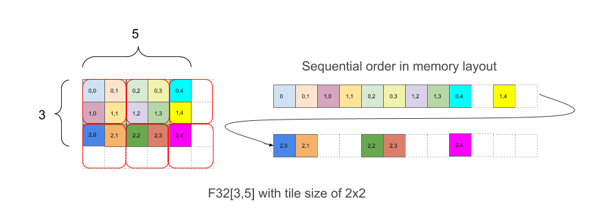
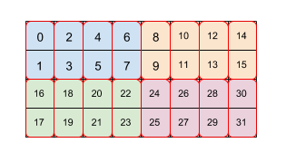

Tiled layoutlink
Warning
Tiled layout is pre-release and this describes how it's intended to work. Errors may be silently ignored.

Figure 1
Figure 1 shows how an array F32[3,5] is laid out in memory with 2x2 tiling. A shape with this layout is written as F32[3,5]{1,0:T(2,2)}, where 1,0 relates to the physical order of dimensions (minor_to_major field in Layout) while (2,2) after the colon indicates tiling of the physical dimensions by a 2x2 tile.
Intuitively tiles are laid out to cover the shape and then within each tile, elements are then laid out without tiling, as in the example above, where the right part of the example shows the layout in memory, including the white padding elements that are added in order to have complete 2x2 tiles even though the original array bounds are not even.
The extra elements in the padding are not required to contain any particular value.
Linear index formulas for tiling given a shape and a tilelink
Without tiling, an element e=(en, en-1, ... , e1) in an array with array bounds d=(dn, dn-1, ... , d1) (d1 is the most minor dimension) is laid out by major to minor order at position:
linear_index(e, d)
= linear_index((en, en-1, ... , e1),
(dn, dn-1, ... , d1))
= endn-1...d1 +
en-1dn-2...d1 + ... + e1
For simplicity of notation in this document we assume a tile has the same number of dimensions as the array. In XLA's implementation of tiling, this is generalized to tilings with fewer dimensions by leaving the initial most-major dimensions unchanged and applying the tiling only to the most minor dimensions, so that the tiling that is specified mentions a suffix of the physical dimensions of the shape being tiled.
When tiling of size (tn, tn-1, ... , t1) is used, an element in the array with indices (en, en-1, ... , e1) is mapped to this position in the final layout:
linear_index_with_tile(e, d, t)
= linear_index((⌊e/t⌋, e mod t), (⌈d/t⌉, t)) (arithmetic is
elementwise, (a,b) is concatenation)
= linear_index((⌊en/tn⌋, ... ,
⌊e1/t1⌋, en mod tn, ... ,
e1 mod t1), (⌈dn/tn⌉, ... ,
⌈d1/t1⌉, tn, tn-1, ... ,
t1))
= linear_index((⌊en/tn⌋, ... ,
⌊e1/t1⌋), (⌈dn/tn⌉, ... ,
⌈d1/t1⌉))∙tntn-1...t1 +
linear_index((en mod tn, ... , e1 mod
t1), (tn, tn-1, ... , t1))
The layout can be thought of as having two parts: (⌊en/tn⌋, ... , ⌊e1/t1⌋), which corresponds to a tile index in an array of tiles of size (⌈dn/tn⌉, ... , ⌈d1/t1⌉), and (en mod tn, ... , e1 mod t1), which corresponds to a within-tile index. The ceil function appears in ⌈di/ti⌉ because if tiles overrun the bounds of the larger array, padding is inserted as in Figure 1. Both the tiles and elements within tiles are laid out recursively without tiling.
For the example in Figure 1, element (2,3) has tile index (1,1), and within-tile index (0,1), for a combined coordinate vector of (1, 1, 0, 1). The tile indices have bounds (2, 3) and the tile itself is (2, 2) for a combined vector of (2, 3, 2, 2). The linear index with tile for the element with index (2, 3) in the logical shape is then
linear_index_with_tile((2,3), (3,5), (2,2))
= linear_index((1,1,0,1), (2,3,2,2))
= linear_index((1,1), (2,3)) ∙ 2 ∙ 2 + linear_index((0,1), (2,2))
= (1 ∙ 3 + 1) ∙ 2 ∙ 2 + (0 ∙ 2 + 1)
= 17.
Tiling as pad-reshape-transposelink
Tiling-based layout operates as follows:
Consider an array of dimensions (dn, dn-1, ... , d1) (d1
is the most minor dimension). When it’s laid out with tiling of size
(tn, tn-1, ... , t1) (t1 is the most
minor dimension), that tiling can be described in terms of pad-reshape-transpose
in the following way.
- The array is padded to (⌈dn/tn⌉∙tn, ... , ⌈d1/t1⌉∙t1).
- Each dimension i is broken into (⌈di/ti⌉,
ti), i.e. the array is reshaped to
(⌈dn/tn⌉, tn, ... , ⌈d1/t1⌉, t1).
There is no physical layout change in this reshape by itself, so this reshape is a bitcast. If one is not explicitly thinking of a tiling, this reshape could express any shape with the same number of elements as the padded shape - the example here is of how to express a tile in this way. - A transpose happens by moving tn, ... , t1 to the most
minor dimensions while keeping their relative order, so that the order of
dimensions from most major to most minor becomes
(⌈dn/tn⌉, ... , ⌈d1/t1⌉, tn, ... , t1).
The final shape has the prefix
(⌈dn/tn⌉, ... ,
⌈d1/t1⌉), which describes the number of tiles in each
dimension. An element in the array (en, ... , e1) is
mapped to this element in the final shape:
(⌊en/tn⌋, ... ,
⌊e0/t0⌋, en mod tn, ... ,
e1 mod t1). It is easy to see that the linear index of the
element follows the formula above as expected.
Repeated tilinglink
XLA's tiling becomes even more flexible by applying it repeatedly.

Figure 2
Figure 2 shows how an array of size 4x8 is tiled by two levels of tiling (first 2x4 then 2x1). We represent this repeated tiling as (2,4)(2,1). Each color indicates a 2x4 tile and each red border box is a 2x1 tile. The numbers indicates the linear index in memory of that element in the tiled format. This format matches the format used for BF16 on TPU, except that the initial tile is bigger, namely the tiling is (8,128)(2,1), where the purpose of the second tiling by 2x1 is to collect together two 16 bit values to form one 32 bit value in a way that aligns with the architecture of a TPU.
Note that a second or later tile can refer to both the minor within-tile dimensions, which just rearranges data within the tile, as in this example with (8,128)(2,1), but can also refer to the major cross-tile dimensions from the prior tiling.
Combining dimensions using tileslink
XLA's tiling also supports combining dimensions. For example, it can combine dimensions in F32[2,7,8,11,10]{4,3,2,1,0} into F32[112,110]{1,0} first before tiling it with (2,3). The tile used is (∗,∗,2,∗,3). Here an asterisk in a tile implies taking that dimension and combining it with the next more minor dimension. Multiple adjacent dimensions can be subsumed together into one dimension. A subsumed dimension is represented by a tile value of -1 in that dimension of the tile, which is not otherwise valid in a tile as a dimension size.
More precisely, if dimension i of the shape is eliminated via an asterisk in the tile, then before the prior definition of tiling is applied, that dimension is removed from both the shape being tiled and the tile vector, and what was dimension i-1 of the shape has its array bound increased from di-1 to didi-1. This step is repeated for each asterisk in the tile vector.
Created: January 9, 2023